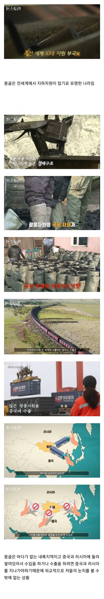
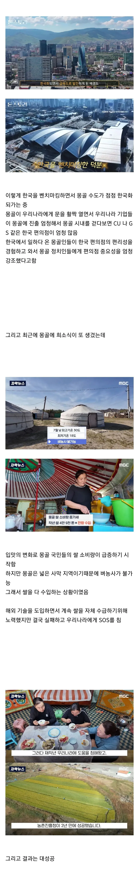
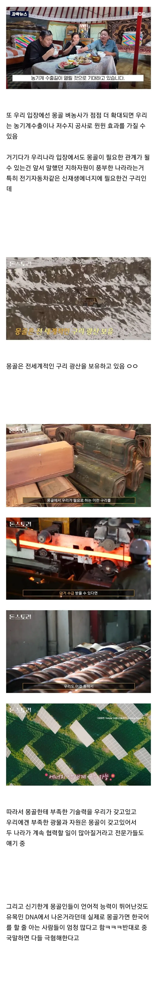

???: 적의 적은 친구



???: 적의 적은 친구
문명이랑 똑같네 ㅋㅋㅋㅋㅋㅋ
어게인 칭키스탄
한국을 좋아하는게 맞긴한데 반쯤은 그나라인지 떠보기위한게 아닐까 하는 생각도 들긴함
그 나라가 어디여
중국. 떠본다는게 결국 중국이랑 똑같네 너네도… 이런걸 본다는거지 않을까?
그래서 중국, 러시아 어떻게 뚫을건데? 내용이 무슨 국뽕스럽네...
협력이 강해지면 상황이 좀 달라져서 그럴듯?
지금이야 몽골이 팔려면 무조건 중러를 경유해야되니까
중러가 너네 우리한테 싸게 안팔아? 아 그럼 국경 안열어 ㅅㄱ 하면 끝인데
한국 기업이 들어가서 중러는 경유만 한다던가
아예 합작 회사라던가 세우면
그때부턴 몽골을 압박하는게 아니라
한국까지 압박하는 셈이 되니까
뭐 물리적으로 막으려면 우리야 별수 없긴 하지만
외교적으로 몽골만 압박하는거보단
한국까지 압박해야되면 좀 더 힘들어지기야 하겠지
우리나라 잘하는게 재수출이자너
뚫는다는 말은 안했는데?
제목은 몽골이 한국을 좋아하는 이유임
ㅅㅂ구리광산???오마갓 뷰르르릇 싼다
고려시대때 임짐왜란급으로 온국토가 유린 당했는데 여론은 괜찮네 ㅋㅋ
원간섭기 1230’s ~ 1350’s
700년 전은 좀
600년 지나면 일본도 좋아질까?
일본이랑은 느낌이 다르지 않나
몽골은 그냥 침략 이고
일본은 민족성 말살 이런 정책을 펼쳤잖아
반박시 니말이 맞음
시간지나면 희석되겠지 뭐
지금도 일본여행이 1티어여행지인데
70년 전이랑 지금이랑 비교해봤을때 600년 뒤면 많이 다르겠지
요즘 어른들 중국은 1000년의 적 같은거 하는거보면 700년전인건 상관안하나보던데
혹시 유치원때 친구한테 한대맞은거 아직도 기억하면서 증오하시나요?
중국 일본은 체급도 우리보다 크고 현대와서까지도 꾸준히 우리한테 지랄하지만 몽골은 아니자너 ㅋㅋ몽골이 원나라 부마국은 도리를 다해야할것 하면 똑같지 않을까 ㅋㅋ
그때는 우리만 쳐맞은것도 아니고
다른 나라는 더 쎄게 맞았음
그땐 우리만 쳐맞은 게 아니라 세계의 절반이 쓸려나갔어ㅋㅋㅋㅋ
물이 없는데 벼농사를?
전세계적인 구리광산이라...
입맛이 싹도노
중국애들은 진짜 여기저기서 양아치짓 하는구나
몽골애들 쌀밥이랑 김치 ㅈㄴ먹긴 하더라
뭔 김치랑 양고기 볶아서 밥에 올려먹고 김치랑 양고기 볶아서 면에 올려먹고 그냥 양고기 간장소스에 볶아서 밥에 올려먹고 함
근데 빵도 엄청 많이 먹더라고… 빵코너 엄청 큼
참 몽골이 쪼금만 왼쪽으로 더 길었으면 우즈벡이라도 연결해서 외교 다각화를 시도해볼법도 한데..
어째 식민지같네 자원 수탈은아니지만 자원가져오고 그나라 식량 늘려주고 인프라? 알아서 설치되고 마치 호주의영국처럼...
왼쪽으로 100km도 안되는 거리 때문에 연결이 안되서 존나 고통스러워함 쟤네
중러에 둘러싸여 그놈들 안통하면 수출입도 할수없는 입지라니 지옥같다
몽골은 진짜 하이테크 제조업 아니면 살 길이 없는거네
저 엄청난 자원을 중러가 안사고는 못배기는 제품으로 탈바꿈시키거나 비행기로 수출해도 될 만한 고부가가치 제품으로 만들어야 할듯
중국이 5호16국으로 나뉘고..
그중 친몽 국가가 중간무역으로 뚫어주기만 하면 간단명료해지네.
한몽연합 으로 중국을 잡자
몽골은 땅만 크지 인구수는 적어...
ㄹㅇ 쟤네 중국말 하면 어퍼컷부터 날린다는거 트루임?
근데 어케 수출을 하지? 중국이 압박하면 러시아로 돌려서 수출하는 식인가?
울란바토르 시내에 있는 한국 편의점 숫자가 몇십개 정도가 아니던데, 상품들은 한국에서 공수해 오면 된다고 쳐도 편의점 식품들은 현지에 공장을 세우고 거기서 제조해야 할텐데 그 많은 편의점에서 발주하는 주문량 감당하려면 공장 하나둘로는 턱도 없...지는 않겠구나.
직원 백명 규모 식품 공장 하나에서 하루에 만들어내는 양이 햄버거 하나만 몇천개씩 만드니까 뭐 공장 두개 세개만 있어도 수요는 감당이 되겠네.
그리고 몽골사람들이 한국인과 중국인에 대한 태도가 천지차이 인것에 대해 중국애들은 대체적으로 '괘씸하다 우리가 산업화도 시켜주고 인퓨ㅡ라도 깔아주고 다 해줬는데 왜 대접이 이따위냐.'라는 등의 생각이 재배적이던데 자기들이 몽골에 끼친 피해에 대해서는 아무런 인지조차 못하던 모습이 동조선(일본이라고도 하죠) 애들이 한국에 대해 배은망덕 어쩌구 하던 모습과 겹쳐보이는게 좀 웃기다고나...
몽골에 자원이 많은건 알겠는데 해상운반은 당연히 안될뿐더러, 육로도 도로와 철도 다 북한때문에 안되는거 아님? 그럼 남은건 육로로 오다다 중국에서 해상으로 환적하거나 항공뿐인데 마진이 남을까